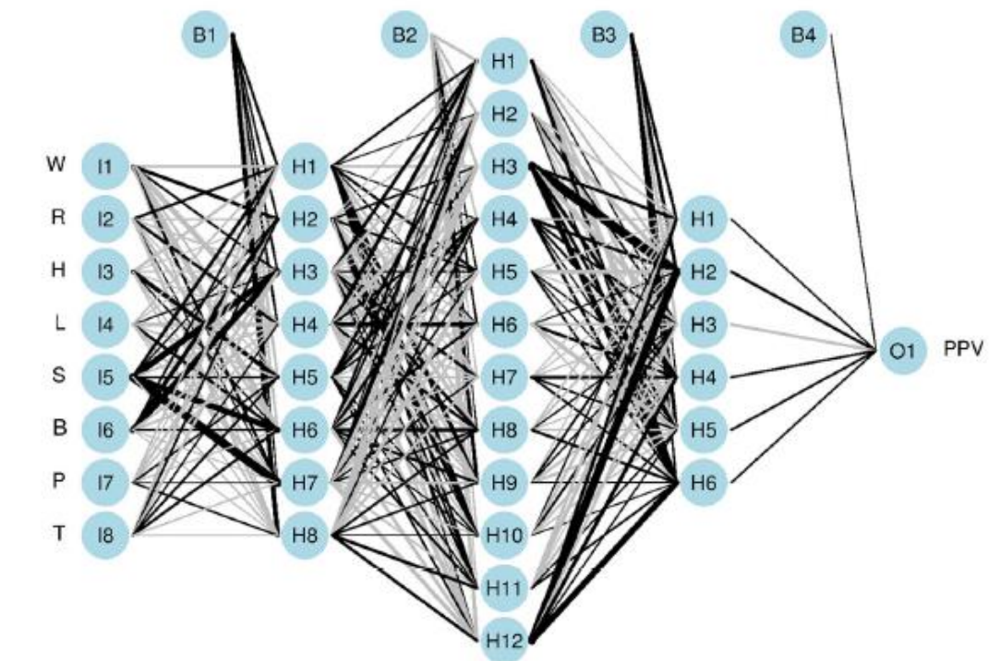
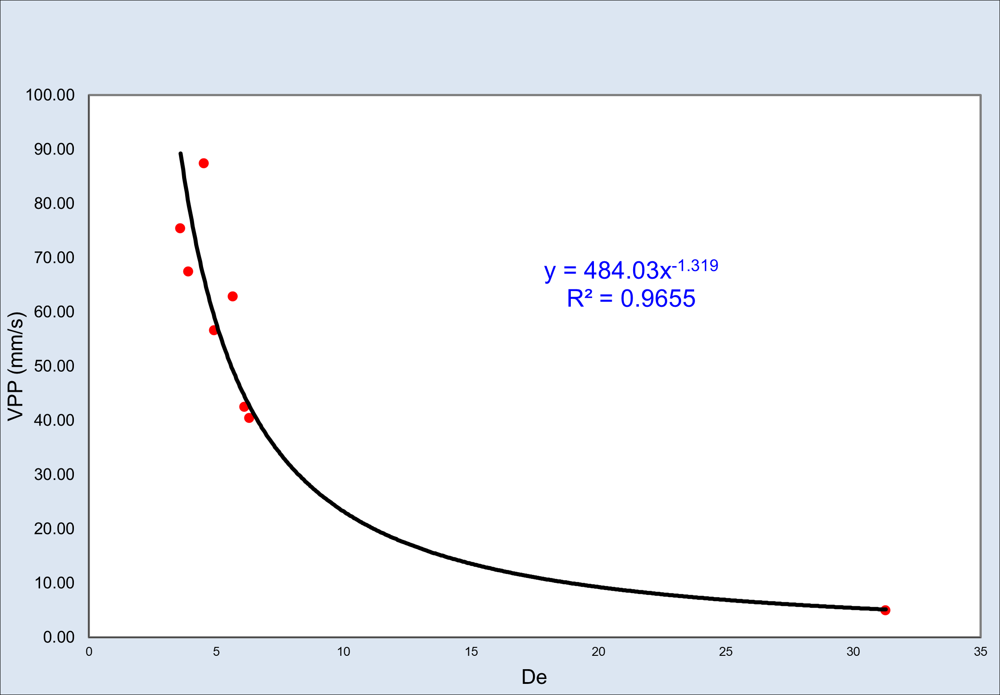

An artificial neural network was developed in python for Peak Particle Velocity prediction, this involves data analysis of vibration records and data cleaning. As result we can make more accurate prediction on vibration from blasting that could mitigate adverse effects on surrounding areas.

The records of the vibrations produced by blasting are stored in seismographs, which give the amplitudes and duration of the ground motions produced by blasting. The predictive Devine model represents the vibration behavior for the far field (approximately d > 3 load length).
.png)
An alternative approach for Fragmentation Prediction with artificial neural network to compare with KUZ-RAM formula for P80 prediction. This implementation includes feature engineering that is the creation of a new feature(variable) from other features(like "S/B"s that is spacing and burden ratio).This implementation was also developed in python
Python, being an easy to understand and free programming language, has a large community in many fields, one of them is the development of Power Point, Excel and Word manipulation, which facilitates the automation of activities that do not bring value because they are repetitive.